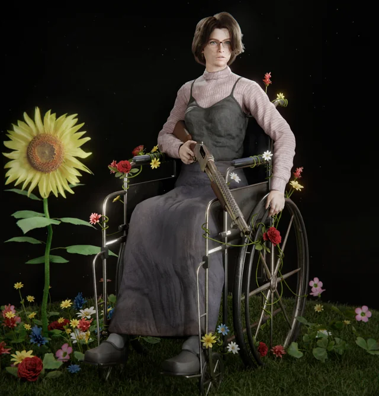

Solaire encuentra el sol despues de 10 años buscando
Tras mirar al cielo, cosa que no habia probrado, descubrio que el sol estuvo ahi siempre

Hombre esta demasiado cabreado para morirse
Paco Tryndamere se golpeo el dedo meñique del pie con una mesa de
noche

Lebron James no lee el jefe al que se enfrenta y saca 4 cartas contra el psiquico
El jugador estadopunidense esta destrozado al perder una partida que estaba ganada al sacar 4 reyes pensando que estaba chill de cojones

4 colegas se adentran en una mazmorra para salvar a un pibe random
No tienen ni idea de la que les espera, no va a salir vivo ni uno

Botanica descubre una planta que recupera extremidades perdidas
La botanica Olivia ha deascubierto una hierba azul que devuelve
miembros perdidos tras su ingestion